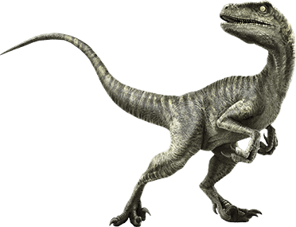

Velociraptor
Swift thief
Diet: Carnivore
Velociraptor, in real life, was a genus of dromaeosaurid theropod dinosaur from the Late Cretaceous period which inhabited what is now the Mongolia-China border with other unique dinosaurs.
Velociraptor was no bigger than a wolf and with its feathers it bore a very bird-like appearance that would make it all the more different from the films, being more akin to a flightless hawk.
It had a long claw ("terrible claw") on the second toe of both feet, 8 cm (3 in) long, which was probably used as a weapon, plunging into the flesh of victims and causing deep wounds.